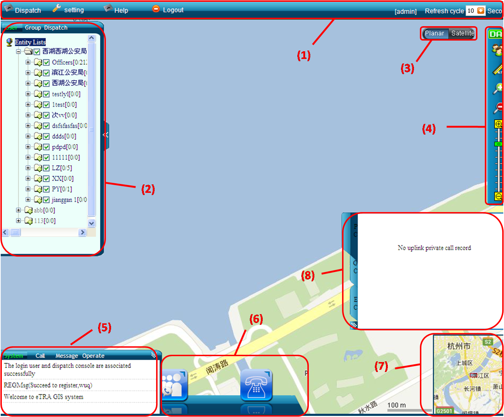
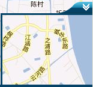

The main interface is the major operating interface of the system. It is composed of the operation menu bar, member tree, log window, call toolbar, Hawkeye, map toolbar, map interface and uplink call record field. Through the interface, operator can perform related operations of radio users and talk groups. The layout of the main interface is shown in Figure 1.

Figure 1. GIS system main interface
(1) Operation menu bar |
(2) Member tree |
(3) Map toggle button |
(4) Map toolbar |
(5) Log window |
(6) Call toolbar |
(7) Hawkeye |
(8) Uplink call panel |
The map interface displays the region of the map, and the mobile users under the administration of the dispatcher. Dispatcher can drag and zoom the map, and right-click a single mobile user. The map interface is shown in Figure 2.

Figure 2. Map interface
 Note:
Note:
When there are too many mobile users in the interface, the map only displays part of the users in concentrated area.
The operation menu bar is in the top of the interface, shown in Figure 3.

Figure 3. Operation menu bar
Through the menu bar, we can view the detailed grouping information, and perform related operations, such as call and bulk SMS. We can also set the refresh time of the map in the far right of the menu bar.
The member tree is in the left side of the interface, shown in Figure 4.

Figure 4. Member tree
The member tree displays the affiliation of each unit visually. Through it, we can view the individual units and their sub-units quickly, and make operations quickly. In addition, it counts the number of online users.
The map toggle button is in the right side of the interface, shown in Figure 5.

Figure 5. Map toggle button
Through the button, we can switch between the plan view and the satellite map.
The map toolbar is in the far right of the interface, shown in Figure 6.

Figure 6. Map toolbar
Through the toolbar, users can realize the region selection, distance measurement, zoom in, zoom out, panning, navigation and other map functions.
The call toolbar is shown in Figure 7.

Figure 7. Call toolbar
The call toolabr provides the function of group call, private call and PTT call, as well as the call status text.
There is a small and shrinkage map in the lower right corner of the interface, shown in Figure 8.

Figure 8. Hawkeye
The Hawkeye provides a wide range of display. Drag the region and the main map will move accordingly; click a spot in the Hawkeye and the main map will navigate to the specified location quickly.
The log window can be zoomed freely. It records the operations of the system, call and SMS, and lists the corresponding logs in text form, shown in Figure 9.

Figure 9. Log window
The uplink call panel records all records of the system uplink call, including the private uplink call record, group uplink call records and emergency uplink call record, shown in Figure 10.

Figure 10. Call uplink panel
Through the panel, the dispatch console can answer, reject or participate in all ongoing calls directly.
Copyright © 2012 Eastcom, Inc. All rights reserved. |
||